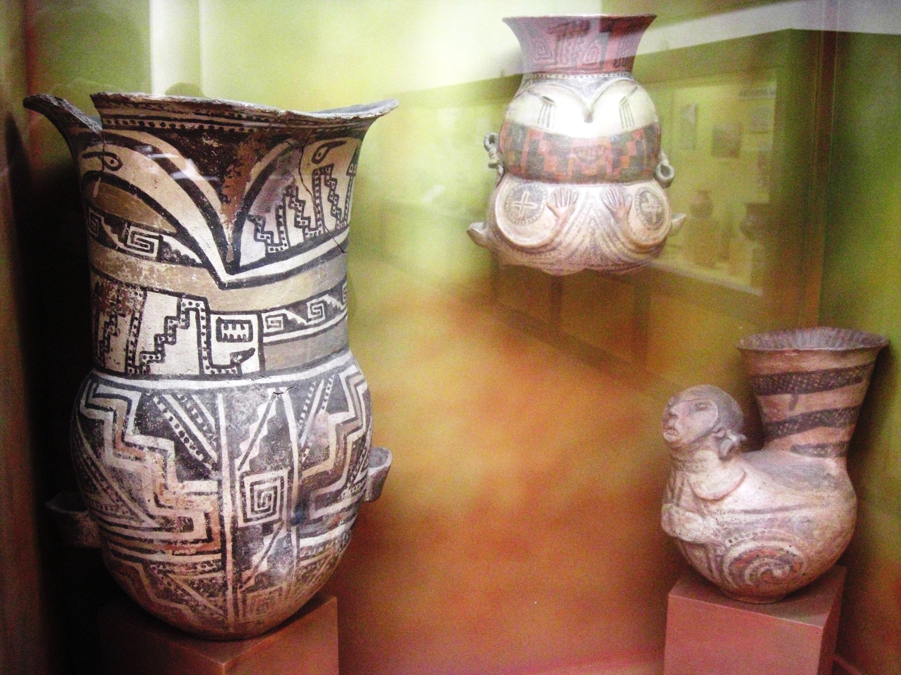
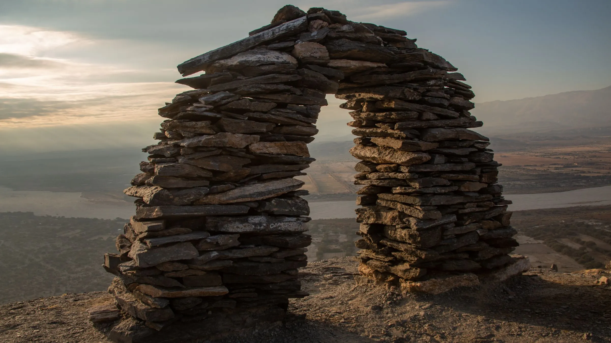
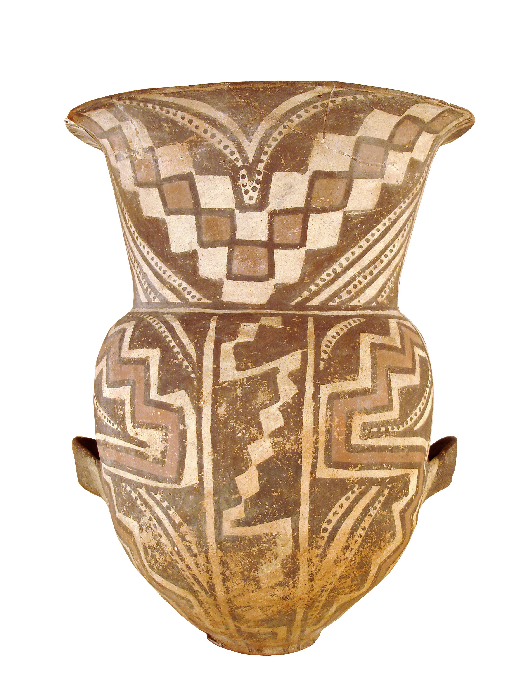
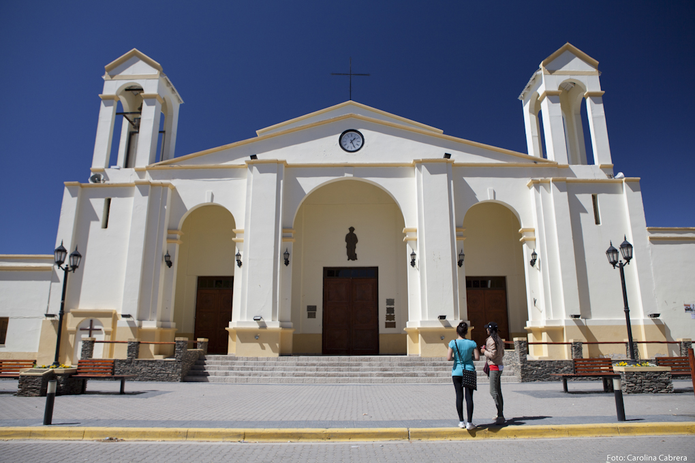
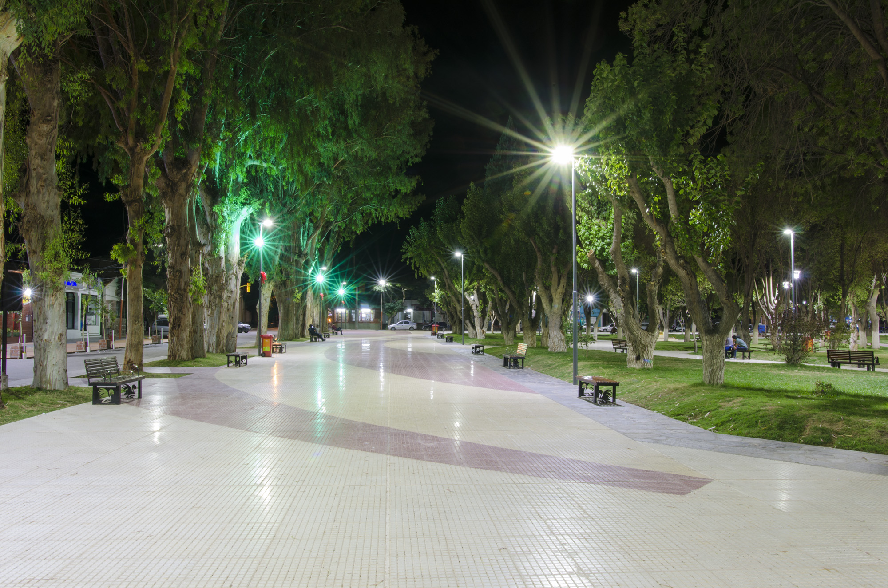
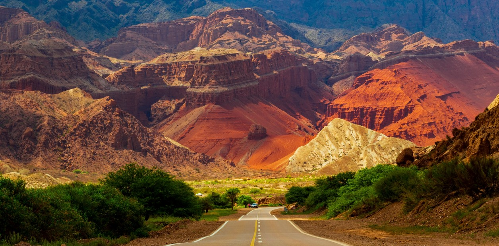

Santa María · Catamarca
Una historia que atraviesa el tiempo
Un territorio donde las huellas del pasado siguen formando parte del presente
Historia e identidad
Un pasado que define nuestra identidad
El Valle de Yocavil es un territorio con una larga historia de ocupación humana. Los sitios, objetos y espacios habitados que estudia la arqueología permiten reconocer transformaciones en la vida de sus comunidades a lo largo del tiempo.
En Santa María, esa profundidad histórica convive con una riqueza cultural que se expresa en el paisaje y en la memoria local. Cada período dejó rastros distintos; juntos, componen una historia diversa, todavía en estudio.
Pueblos originarios · culturas prehispánicas
Primeros habitantes
Antes de la ciudad actual, distintas comunidades habitaron el valle. La arqueología estudia viviendas, espacios productivos, objetos y cerámicas para conocer sus formas de organización y su relación con el entorno.
Con el desarrollo de las sociedades agroalfareras, la agricultura, la elaboración de cerámica y la ocupación organizada del espacio adquirieron un papel central. La evidencia muestra asentamientos de distintas escalas y áreas de cultivo; sus formas cambiaron con el tiempo y continúan siendo objeto de investigación.
Las piezas y construcciones que han llegado hasta hoy son también expresiones culturales y técnicas, y acercan al visitante a sociedades diversas, no a un único modo de vida.

Santa María y sus alrededores
Legado arqueológico
La arqueología regional reúne evidencias de distintos sitios para estudiar cambios en la cerámica, la arquitectura, los asentamientos y los espacios productivos. La llamada cultura Santa María es una categoría arqueológica construida a partir del análisis de materiales y contextos; no representa una historia uniforme ni aislada de otras sociedades.
Fuerte Quemado, con sectores como La Ventanita, forma parte de ese paisaje arqueológico. El estudio de sus restos contribuye a comprender cómo se habitó y transformó el Valle de Yocavil, mientras las interpretaciones se revisan a la luz de nuevas investigaciones.


Períodos históricos
Una línea a través del tiempo
- Primeras ocupaciones humanas
- Desarrollo de sociedades agroalfareras
- Período tardío y presencia incaica
- Llegada española y período colonial
- Consolidación de Santa María · 1710 Hito local asociado a Ambrosio Muñiz Cancinos, una capilla y la voluntad de adquirir tierras.
- Santa María contemporánea
Período histórico
Época colonial
Hacia 1646, los jesuitas establecieron la misión de Santa María de los Ángeles de Yocavil. La misión formó parte de la presencia misional en los Valles Calchaquíes y coexistió con las comunidades originarias del territorio.
En 1658, la misión fue quemada durante los conflictos vinculados al levantamiento de Pedro Bohórquez. Su nombre, sin embargo, permaneció en la memoria local.
En 1710, Ambrosio Muñiz Cancinos ya contaba con una iglesia en el paraje y manifestó su voluntad de comprar las tierras. La Municipalidad de Santa María señala que, tiempo después, esa fecha fue elegida como hito de origen de la ciudad. Se trata de una referencia al proceso de consolidación del asentamiento, anterior a la compra formal de las tierras.

Comunidad y memoria
Santa María actual
El pasado histórico forma parte de la identidad cultural de Santa María, pero no permanece inmóvil: vive en las tradiciones, las celebraciones, la artesanía y los relatos que la comunidad comparte y transmite.
Acercarse a estas expresiones permite reconocer la memoria como una práctica cotidiana y valorar el patrimonio como un vínculo entre generaciones, territorio y vida presente.

